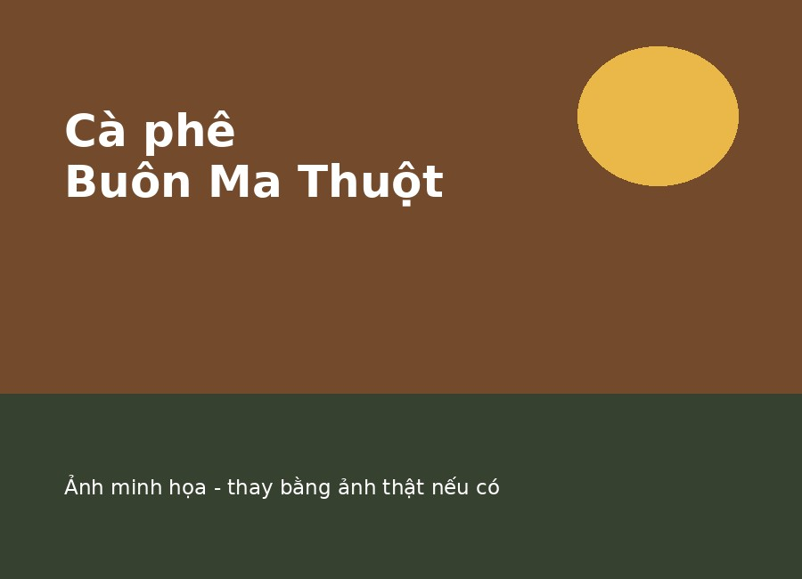
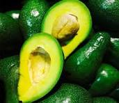
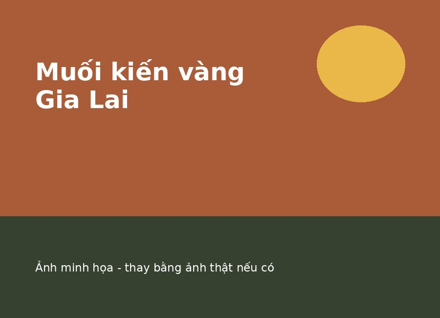
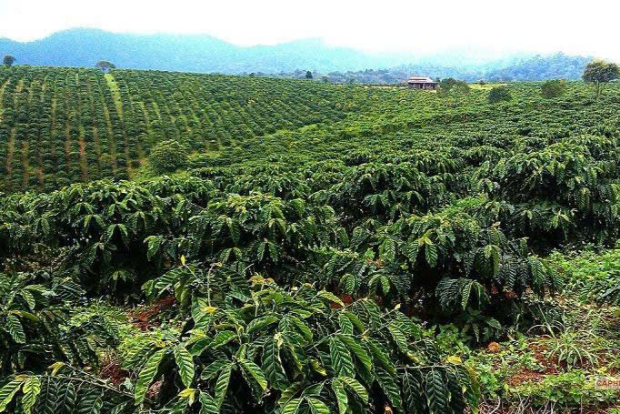

Nông sản khô & hạt
Cà phê Buôn Ma Thuột
Hương thơm mạnh, vị đậm đặc trưng của vùng đất Đắk Lắk.
Xem chi tiết Cà phê Buôn Ma ThuộtĐặc sản chọn lọc từ Tây Nguyên
Từ nông sản khô, mật ong, trái cây đến gia vị và thức uống truyền thống, mỗi sản phẩm đều mang nét riêng của vùng đất đại ngàn.
Khám phá sản phẩmChọn một danh mục để xem các sản phẩm tương ứng.

Cà phê Buôn Ma Thuột, mắc ca Tây Nguyên và hạt tiêu Đắk Nông.

Mật ong hoa cà phê với hương thơm dịu, vị ngọt tự nhiên.

Bơ sáp Đắk Lắk và sầu riêng Đắk Lắk.

Muối kiến vàng Gia Lai và rượu cần Tây Nguyên.
Ba sản phẩm tiêu biểu được nhiều người biết đến.
Hương thơm mạnh, vị đậm đặc trưng của vùng đất Đắk Lắk.
Xem chi tiết Cà phê Buôn Ma Thuột
Vị ngọt dịu và mùi thơm nhẹ từ mùa hoa cà phê Tây Nguyên.
Xem chi tiết Mật ong hoa cà phêGia vị đặc trưng của Gia Lai, có vị mặn, chua và cay hài hòa.
Xem chi tiết Muối kiến vàng Gia Lai
Câu chuyện vùng miền
Tây Nguyên có khí hậu và thổ nhưỡng phù hợp với nhiều loại nông sản. Từ những vườn cà phê, hồ tiêu đến trái cây và các món truyền thống, mỗi sản phẩm đều gắn với đời sống của người dân địa phương.
Website giới thiệu các sản phẩm địa phương theo hướng rõ nguồn gốc, dễ tìm hiểu và thuận tiện khi lựa chọn.
Thông tin xuất xứ được trình bày cụ thể cho từng sản phẩm.
Ưu tiên đặc sản mang nét riêng của các tỉnh Tây Nguyên.
Giá, tình trạng hàng và mô tả được hiển thị rõ ràng.